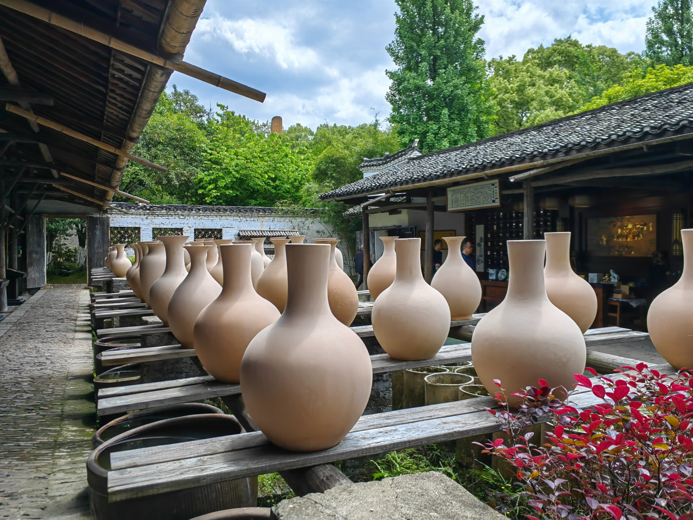

Jingdezhen Tours

Jingdezhen: Porcelain, Kilns, Art, and Market Tour
From ancient to modern, from the British Museum to NYC’s MET, Jingdezhen porcelain amazes worldwide. Discover China’s porcelain capital and experience its rich craftsmanship on this private day tour.
Price:From £115 per person
Book Now